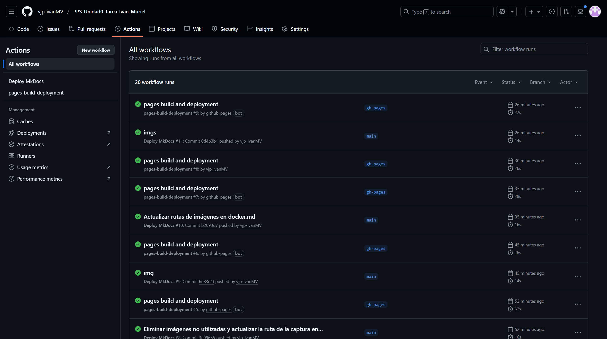

Actividad Unidad 0 - gitActions
Implementar una pipeline de Integración Continua (CI) en GitHub Actions para automatizar la generación y validación de la documentación de un proyecto Python cada vez que se actualiza el código o la documentación fuente.
- Integrar Herramientas: Configurar y utilizar GitHub Actions como motor de una pipeline de Integración Continua (CI/CD).
- Automatizar la Calidad: Crear un flujo de trabajo que se dispare automáticamente con eventos clave (ej.
git push). - Gestión de Dependencias: Utilizar comandos de Python (
pip) dentro de la pipeline para instalar las dependencias necesarias de la aplicación y la documentación (ej.,MkDocs). - Despliegue Continuo (CD Básico): Demostrar un proceso de Despliegue Continuo al actualizar y publicar la documentación en las GitHub Pages del proyecto.
- Fomentar DevSecOps: Aplicar la filosofía de que el mantenimiento y la validación de la documentación (una forma de "calidad y consistencia") deben ser un paso obligatorio y automatizado en el ciclo de vida del desarrollo.
Desarrollo
Lo primero que haremos será instalar GitHub CLI.
GiHug CLI (o gh) es una herramienta de código abierto que te permite usar GitHub directamente desde la línea de comandos de tu terminal. Permite gestionar repositorios, solicitudes de extracción (pull requests), problemas, flujos de trabajo, lanzamientos y mucho más, sin necesidad de salir de tu entorno de línea de comandos, lo que ahorra tiempo y facilita la automatización de tareas con scripts.
Vamos a partir de la estructura del repositorio que hemos creado en la Actividad sobre el uso de Git.
Recordamos que en ella hicimos un respositorio de una calculadora en Python.
A partír de ahí vamos a crear un workflow de Github Actions.
GitHub Actions es una plataforma de automatización integrada en GitHub que permite crear flujos de trabajo (workflows) para automatizar tareas de desarrollo de software, como la compilación, las pruebas y el despliegue continuo (CI/CD). Se define mediante archivos YAML dentro del propio repositorio y puede ejecutarse en máquinas virtuales de Linux, Windows o macOS, o en ejecutores auto-hospedado.
En esta ocasión vamos a utilizar MkDocs para ver cómo funciona el workflow.
MkDocs es un generador de sitios estáticos escrito en Python que permite crear rápidamente sitios de documentación para proyectos usando archivos en Markdown y un único archivo de configuración en YAML. Transforma el contenido de Markdown en páginas HTML, CSS y JavaScript, lo que facilita la generación y publicación de documentación técnica de proyectos de código abierto de manera eficiente.
Paso 1: Preparación del Proyecto y Documentación
1. Estructura de Archivos
Para que la generación de la web funcione correctamente con el archivo de configuración mostrado, la estructura de carpetas del proyecto debe ser la siguiente:
PPS-Unidad0-Tarea-PPS/
├── docs/
│ ├── index.md
│ ├── git.md
│ ├── gitActions.md
| ├── gitPages.md
│ ├── docker.md
│ ├── conclusiones.md
│ └── img/
├── mkdocs.yml
├── requirements.txt
└── .github/
└── workflows/
└── deploy_docs.yml
2. Configuración de MkDocs
Creamos (o editamos) el archivo mkdocs.yml en la raíz del proyecto con la configuración adaptada a los contenidos de la unidad:
# mkdocs.yml
# -------------------------------------------------------------
# CONFIGURACIÓN GENERAL DEL SITIO
# -------------------------------------------------------------
site_name: PPS-Unidad0-Tarea-PPS-IvanMuriel # Define el título que aparecerá en la barra de navegación y en la etiqueta <title> del navegador.
# -------------------------------------------------------------
# ESTRUCTURA DE NAVEGACIÓN (MENÚ)
# -------------------------------------------------------------
# Define la lista de enlaces y el orden de aparición en el menú de navegación principal.
nav:
# El nombre de la sección en el menú: nombre_archivo.md
- Home: index.md # Primer elemento del menú, enlaza con el archivo 'index.md'.
- Git: git.md
- Git Actions: gitActions.md
- Git Pages: gitPages.md
- Docker: docker.md
- Conclusiones: conclusiones.md
# -------------------------------------------------------------
# DIRECTORIOS
# -------------------------------------------------------------
# Ruta de la carpeta que contiene todos los archivos .md (Markdown) de la documentación.
# MkDocs buscará aquí los archivos listados en 'nav'.
doc_dir: docs
# -------------------------------------------------------------
# TEMA (Opcional)
# -------------------------------------------------------------
# theme:
# name: 'material' # Si usas el popular tema Material for MkDocs.
# # highlightjs: true
# # code_fences: true
- Creación del Workflow: Dentro del directorio
.github/, crea el directorioworkflows/y dentro de él, el archivodeploy_docs.yml. - Definición del Flujo de Trabajo (YAML): Pega la siguiente configuración en
deploy_docs.yml. Este workflow se dispara con cada push a la ramamain(omaster) y utiliza una acción oficial para gestionar el despliegue de MkDocs a GitHub Pages.
.github/workflows/deploy_docs.yml
# -----------------------------------------------------------
# CONFIGURACIÓN DEL WORKFLOW
# -----------------------------------------------------------
name: Deploy MkDocs # Define el nombre de este flujo de trabajo (aparece en la pestaña 'Actions' de GitHub).
on:
# Define el evento que dispara este flujo de trabajo.
push:
# Este workflow se ejecutará automáticamente cada vez que se haga un 'push' (subida)
# de código al repositorio.
branches:
- main # Específicamente, solo se ejecuta si el push se realiza sobre la rama 'main'.
# -----------------------------------------------------------
# PERMISOS
# -----------------------------------------------------------
# Otorga permisos específicos al GITHUB_TOKEN que se usará en este workflow.
permissions:
contents: write # Permite que el token pueda leer y escribir contenido (necesario para la rama gh-pages).
pages: write # Permite gestionar y escribir en la configuración de GitHub Pages.
id-token: write # Permite solicitar tokens de OpenID Connect (necesario para algunas integraciones de seguridad).
# -----------------------------------------------------------
# DEFINICIÓN DEL TRABAJO (JOB)
# -----------------------------------------------------------
jobs:
deploy: # Define un único trabajo llamado 'deploy'.
runs-on: ubuntu-latest # Especifica que este trabajo se ejecutará en un servidor virtual con la última versión de Ubuntu.
steps: # La secuencia de comandos o acciones a ejecutar en el servidor de Ubuntu.
# -------------------------------------------------------
# PASO 1: OBTENER EL CÓDIGO FUENTE
# -------------------------------------------------------
- name: Checkout Repo # Nombre descriptivo del paso.
# Utiliza una acción oficial de GitHub para clonar el repositorio
# completo en el entorno de trabajo del Runner.
uses: actions/checkout@v3
# -------------------------------------------------------
# PASO 2: CONFIGURAR PYTHON
# -------------------------------------------------------
- name: Set up Python # Nombre descriptivo del paso.
# Utiliza una acción oficial para configurar el entorno de Python.
uses: actions/setup-python@v4
with:
python-version: '3.x' # Especifica que se debe usar la última versión de Python 3.
# -------------------------------------------------------
# PASO 3: INSTALAR DEPENDENCIAS
# -------------------------------------------------------
- name: Install dependencies # Nombre descriptivo del paso.
# Comando que se ejecuta en la terminal de Ubuntu.
# Instala el generador de documentación MkDocs (necesario para el siguiente paso).
run: pip install mkdocs
# -------------------------------------------------------
# PASO 4: CONSTRUIR Y DESPLEGAR LA DOCUMENTACIÓN
# -------------------------------------------------------
- name: Deploy docs # Nombre descriptivo del paso.
# Comando que se ejecuta en la terminal.
# 1. 'mkdocs gh-deploy': Construye la documentación (generando los archivos HTML/CSS/JS).
# 2. '--force': Sube esos archivos generados y fuerza su publicación en la rama 'gh-pages'.
run: mkdocs gh-deploy --force
# Configuración de variables de entorno específicas para este paso.
env:
# Pasa el Token de GitHub. MkDocs lo necesita para autenticarse y subir
# los archivos a la rama 'gh-pages' del repositorio.
GH_TOKEN: ${{ secrets.GITHUB_TOKEN }}
Paso 3: Ejecución y Verificación
- Commit Inicial:
Haz commit y push de los nuevos archivos .
bash
git add .
git commit -m " Configuración inicial de MkDocs y pipeline CI/CD de documentación"
git push origin main
- Monitoreo en GitHub:
Ve a la pestaña Actions de tu repositorio. Deberías ver el workflow "Documentación CI/CD" ejecutándose.
